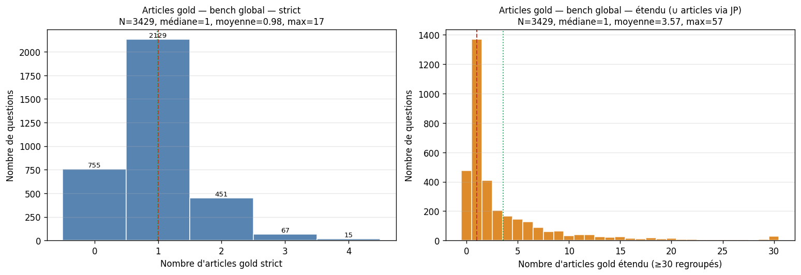
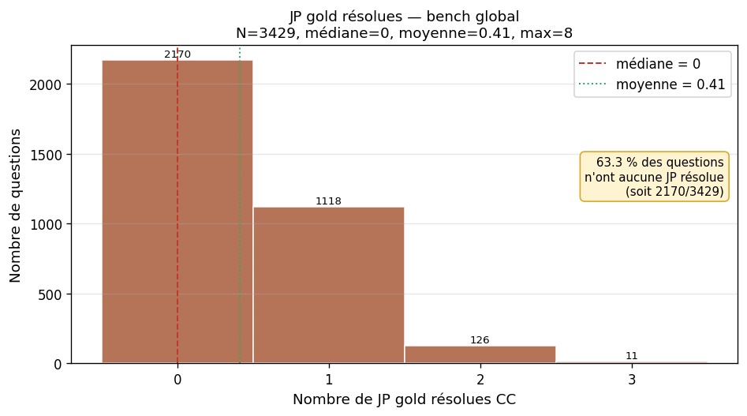
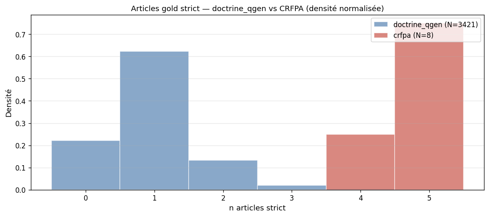
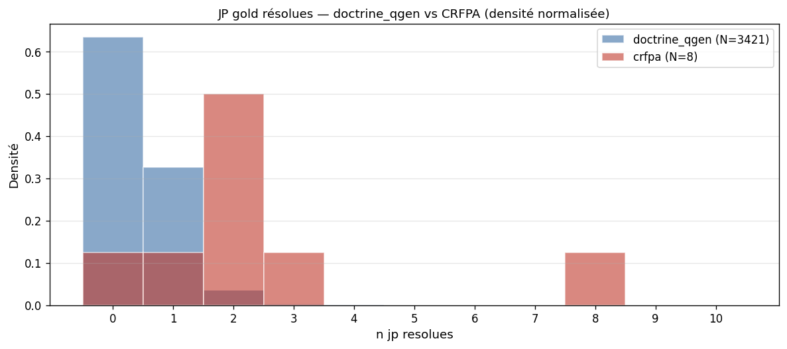

Fusion doctrine_qgen clean + CRFPA pénal — splits article / JP, version strict + étendu. Sorti le 01/06/2026, préparation point Johnny du 04/06/2026.
doctrine_qgen 3 421 questions générées par LLM (Gemma 4 26B) à partir de 230 fascicules Jurisclasseurs Procédure Pénale.
CRFPA 8 questions humaines officielles (3 penal-2025 + 5 procédure-pénale-2025).
bench_global — 3 429 q (tout, y compris questions sans aucun gold)bench_article — 2 674 q (≥1 article strict)bench_article_etendu — 2 955 q (≥1 article étendu)bench_jp — 1 259 q (≥1 JP résolue CC)bench_article ET dans bench_jp (cas typique : elle a 1 article + 1 JP gold). C'est attendu — les splits sont des filtres de pertinence, pas des partitions disjointes.
| Critère | Avant (strict) | Après (clean + CRFPA) | Évolution |
|---|---|---|---|
| Questions totales | 1 707 | 3 429 | ×2,0 |
| Article + JP simultanément (= ancien strict) | 1 707 | ~983 | selon filtre |
| ≥1 article gold | 1 707 (100 %) | 2 674 (78 %) | +57 % |
| ≥1 JP résolue CC | 971 (57 %) | 1 259 (37 %) | +30 % |
| Sources humaines (CRFPA) | 0 | 8 | +8 |
bench_global — 3 429 questions| Modalité | moyenne | médiane | max | p95 | % à 0 |
|---|---|---|---|---|---|
| Articles strict | 0,98 | 1 | 17 | 2 | 22,0 % |
| Articles étendu | 3,57 | 1 | 57 | 14 | 13,8 % |
| JP résolues CC | 0,41 | 0 | 8 | 1 | 63,3 % |
bench_article — 2 674 questions (≥1 article strict)| Modalité | moyenne | médiane | max | p95 | % à 0 |
|---|---|---|---|---|---|
| Articles strict | 1,26 | 1 | 17 | 2 | 0 % |
| Articles étendu | 3,78 | 1 | 57 | 14 | 0 % |
| JP résolues CC | 0,41 | 0 | 8 | 1 | 63,4 % |
bench_article_etendu — 2 955 questions (≥1 article étendu)| Modalité | moyenne | médiane | max | p95 | % à 0 |
|---|---|---|---|---|---|
| Articles strict | 1,14 | 1 | 17 | 2 | 9,5 % |
| Articles étendu | 4,14 | 2 | 57 | 14 | 0 % |
| JP résolues CC | 0,48 | 0 | 8 | 2 | 57,4 % |
9,5 % des questions de ce split n'ont pas d'article strict mais en gagnent au moins 1 via les JP citantes — ces 281 questions étaient invisibles à l'éval précédente.
bench_jp — 1 259 questions (≥1 JP résolue)| Modalité | moyenne | médiane | max | p95 | % à 0 |
|---|---|---|---|---|---|
| Articles strict | 0,96 | 1 | 17 | 2 | 22,3 % |
| Articles étendu | 7,99 | 6 | 57 | 25 | 5,7 % |
| JP résolues CC | 1,13 | 1 | 8 | 2 | 0 % |
Sur ce split, médiane d'articles étendu = 6 (vs 1 sur le global) parce qu'on ne garde que les questions où l'extension via JP est possible. Conséquence directe : précision plafond articles K=10 passe de 11,9 % (strict) à ~50 % (étendu) sur ce sous-ensemble.


\d{2}-\d{2}\.\d{3} ne couvre que les arrêts de la Cour de cassation, pas les CA / TJ / décisions étrangères. Amélioration prévue S10 : étendre via ECLI + numéros de rôle CA/TJ pour atteindre ~80 % de couverture.


articles_attendus ⊆ whitelist_section → granularité d'écriture serrée (médiane 1). 22 % de questions sans article gold = questions trop générales que le LLM n'a pas voulu ancrer.obligatoires ∪ optionnels → médiane 4-5 articles par question. Plus large parce que pensée pour le scoring d'un avocat en formation.Conclusion méthodo : les deux corpus ne mesurent pas exactement la même chose. doctrine_qgen = retrieval ciblé sur 1 texte central ; CRFPA = retrieval exhaustif de tous les textes pertinents pour une consultation. À discuter avec Johnny — on peut soit les évaluer ensemble (faible biais vu le ratio 3 421:8), soit reporter séparément comme deux barres dans nos tableaux.
| Score à mesurer | Split recommandé | N | Rationale |
|---|---|---|---|
| recall@K / précision@K articles strict | bench_article | 2 674 | Évite de fausser la moyenne avec les 22 % de questions sans gold article. |
| recall@K / précision@K articles étendu | bench_article_etendu | 2 955 | Inclut les 281 questions qui ne sont visibles qu'avec l'extension. |
| recall@K / précision@K JP CC | bench_jp | 1 259 | Seules les questions avec JP gold résolue sont évaluables. |
| Composite (bench complet) | bench_global | 3 429 | Sert de référence du périmètre total ; le score moyen sera artificiellement bas à cause des questions sans gold. |
| Split | |R| moyen | Plafond précision K=10 | Plafond précision K=20 |
|---|---|---|---|
| bench_article (strict) | 1,26 | ~12,6 % | ~6,3 % |
| bench_article_etendu (étendu) | 4,14 | ~33 % | ~19 % |
| bench_jp (strict) | 1,13 | ~11,3 % à K=10 | ~22,6 % à K=5 |
Le plafond articles étendu chute de 40,1 % (sur 1 707 strict) à ~33 % (sur 2 955) — la dilution vient des nouvelles questions sans JP qui n'apportent que le strict.
13_eval_recall_at_k.py en pointant sur les nouveaux JSON. Effort : ~30 lignes à modifier, ~1 min de run (cache embedding hit).
Faut-il refaire ? À discuter — l'avantage est de présenter des chiffres sur 56 % plus de questions, donc plus robustes statistiquement.
scripts/17_build_global_bench.py — 280 lignes, construction + stats + figures, 5 s de rundata/global_bench/bench_global.json — 3 429 questions au format normalisédata/global_bench/bench_article.json — 2 674 questionsdata/global_bench/bench_article_etendu.json — 2 955 questionsdata/global_bench/bench_jp.json — 1 259 questionsdata/global_bench/stats.json — métriques détaillées par splitdata/global_bench/fig_hist_*.png — 4 histogrammes